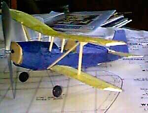

Model by John Meacham
The tissue that came with the Peck kit looked better before shrinking and doping then it did afterwards, I did not color it as I was sure it would not fly. Cut the rubber too short, tied it back with two knots in it, No lube, no stooge so hand wound by turning prop.
Took it to mile square this morning, wound it up about 100 turns and the thing flew great. No times taken, too amazed to start the watch. But, sure looks pretty in the air, Don't want to disturb anything now so brought it home and sits on the brag shelf.
Here is a photo (maybe the first one for the contest, put me down at about 30 second flight.
John Meacham